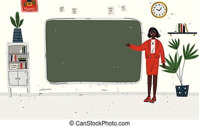

Ezen az oldalon képeket láthatnak arról, hogy milyen szakmák érdekeltek engem, mielőtt a BME-t választottam
Nyelvtan tanár 
A magyar nyelv mindig is nagy szerepet játszott az életemben. A helyesírás tükrözi az ember szorgalmát, figyelmét, igényességét. Helyesírás versenyeken jó helyezéseket értem el, ezért is gondoltam erre.
Testnevelés tanár/Edző
A sport számomra az egyik legfontosabb dolog. Kiskorom óta űzök sportokat, és szerencsére több fajtában is kipróbálhattam magam. Motiválni is tudok, hogy küzdjünk a céljainkért, így következtettem erre a szakmára.
Olimpikon

Mivel jó volt az állóképességem, és egész életemben sportoltam. Plusz a gyerekkori álmaim közé tartozott, így ez is megfordult a fejemben, hogy mi lenne ha én magam lennék sportoló.
Légiforgalmi irányító

Egyik ismerősömtől hallottam, aki régen itt dolgozott, hogy nagyon jól lehet vele keresni. Jól teljesítek nyomás alatt is, főleg, ha olyan dologról van szó ami érdekel. Sosem repültem még, gondoltam jó lenne kis bátorságnövelésnek ez az állás számomra.
Könyvelő

A matematikához kifejezetten jó érzékem van. A statisztikai számítások a kedvenc területem, így a könyvelési szakma mindig is közel állt hozzám. Kiskoromban is papírra vetettem az adatokat, és azokat elemeztem. Ki tudja talán az egyetem után még ez is lehet belőlem?
Tolmács/Fordító
Nyelvtanulással soha nem álltam hadi lábon. Jelenleg két nyelvizsgám van: egy felsőfokú spanyol és egy középfokú német. Ugyanakkor folyamatban van az angol nyelv elsajátítása is.